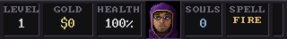
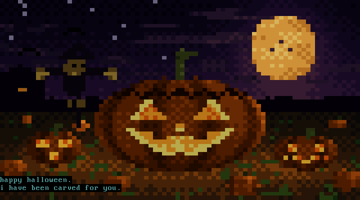
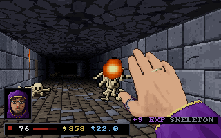

WINDOWS SCREENSAVER · v@VERSION@ · BETA
HAUNTED.EXE
A Halloween screensaver for Windows that runs in real VGA modes. A possessed 486 boots, types back and falls apart; a Wolfenstein-style crypt crawl plays itself; and if you hold H, or any button on a game controller, for three seconds, the crypt is yours. It's made for OLED screens: true black, whole-number scaling up to 4K, and FM-synth music generated as it plays.

Two scenes
They take turns every few minutes, with a fade of the picture and the sound. You can turn either off in the settings.

HAUNT.EXE
80×25 text, 720×400
A possessed 486 PC. It boots, a ghost types back at the DOS prompt, the programs have been got at, and it ends in a fatal error and a CRT power-off, then reboots.

CATACOMB
Mode 13h, 320×200, 256 colours
A crawl through crypts generated for every level, four runs of ten with a boss at the end of each. It plays itself, and you can take it over.
New in this release: the antechamber
On about half the levels the first vault, the gold one, has an antechamber: a chamber with an altar at its heart and a brazier either side, the hall in one wall and the vault's locked door in the opposite one, the vault a small room behind it. A bent secret room's way on that could touch no floor is mended. Since 1.0.0b21.7 the levels are laid by drawn rooms:
From the third level, a level is built round rooms of a shape someone drew, and the halls are made to reach them. Every level gets a place: a shrine spur ending at an altar, a cloister round a solid yard, a gauntlet hall with niches for treasure and for the dead, an alcove hall, and from the sixth level of a run a sunken ring with braziers and an altar. Where halls branch there is a larger room of a set shape, a diamond with a cross or four pillars in it, a pinwheel, a horseshoe, a great nave of slabs. The secret rooms are ten new shapes, and the cracked wall now slides sideways into the stone and leaves the room empty to walk. The first two levels, her hall and the bosses' arenas are as they were.

The crypt, in short
- Four runs of ten levels, each in its own stone and rot, the tenth of each a boss's; past forty they repeat.
- A merchant between levels, a ledger that keeps what you earn and takes what you die with, and a Rune Shrine.
- Spells as six elemental lines with augments, what you were, gear that rolls its elements, and souls that can run dry.
- Twenty-four kinds of the dead, drawn by hand, that sense, remember and hunt in packs; a portrait of each you slay.
- Hazards, puzzles, trials, and secrets in chains that lead into the Backrooms and Severance.
- Mice in the walls, spiders on the stone, and twelve small things that notice you.
- A map, a game controller, touch in the browser, and two hand-drawn levels that teach as you go.
- Every picture, texture, note and sound is made by the code.
Everything, level by level, is in the README.
Install
- Download HAUNTED.EXE and double-click it to try it in a window. F11 switches to full screen and Esc quits.
- To make it your screensaver, right-click HAUNTED.scr and choose Install, or run install.cmd from the zip. Windows asks for administrator rights.
- In Screen Saver Settings choose HAUNTED.EXE. Settings… sets the sound, brightness, scenes, monitor and controller.
- To remove it, run uninstall.cmd as administrator.
Unsigned file: if SmartScreen stops it, choose More info, then Run anyway.
Upgrading: your settings and saves carry over, and this release changes nothing in them. HAUNT.EXE's file manager shows your Windows user name and today's date; keep that in mind before you share a recording.
Built in the open
Every release is built from this repository by GitHub Actions, with a headless harness that renders both scenes and plays a scripted session, and the files go up with their SHA-256 checksums.
Beta status
This is the twenty-first beta's eighth point release, 1.0.0b21.8, "The Antechamber". The author played the one before it, 1.0.0b21.7, "Drawn Rooms", and said it plays well; this one has not been played by hand. Everything is tested in the test harness, not under Wine, and the Windows and browser builds were compiled and smoke-tested by GitHub Actions. What each release was tested with, and how, is under What has been verified in the README.
| Area | Evidence | Confidence |
|---|---|---|
| The antechamber | In the harness only. 1,800 levels with every exit, key, locked door and secret room reached and no floor stranded. The screensaver on sixteen seeds for 3,000 seconds, three times over, with the antechamber left out and put in: 120 deaths and 99, 6.8 levels cleared either way. Against 1.0.0b21.7 it died more (130 deaths against 99, 6.6 levels cleared against 6.9), which is not explained and is probably noise. Not played by hand. | LOW |
| The drawn rooms (1.0.0b21.7) | Played by the author, who said it plays well. In the harness: 1,800 levels with every exit, key, locked door and secret room reached and no floor stranded; 22 made again without drawn rooms. The screensaver on sixteen seeds for 3,000 seconds, twice, against the build before: 6.6 and 6.9 levels cleared against 6.6 and 6.2, and 32 and 27 deaths against 47 and 47, which is no worse (the old build's own numbers move between runs). It reaches level 8 or 9 in that time. Clean under AddressSanitizer. Boss levels and the later runs were not played. | MID |
| The mice, the spiders and the small life | The mice and the spiders' first build were played by the author; the rest in the harness only. Its sounds borrow other effects'. | LOW |
| Everything older | Played by hand up to the third beta and the fourth to twenty-first in part; the rest in the harness only, and none of it under Wine. The README lists each release's evidence. | LOW |